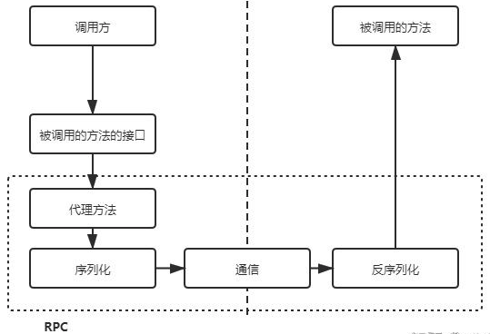

HTTP认识
HTTP, 超文本传输协议, 不提供数据包的传输功能. 属于 应用层协议
本质为: 客户端和服务端约定好的一种通信格式 (就像秦始皇的车同轨书同文).
OSI七层模型
自底向上依次
- 物理层
- 数据链路层
- 网络层
- 传输层: TCP就在这层, 规定需使用 字节流 传输.
- 会话层
- 表示层
- 应用层
TCP传输层
TCP传输层规定需使用 字节流 传输. 但是很容易产生 TCP 粘包, 导致接收方无法理解哪些字节流属于同一个请求，这就是裸 TCP 连接的不可用性. 因此对于传输层的数据, 需要制定一个让对方通过 TCP 连接能看的懂的说明（类似于 OSI 表示层的作用）.
RPC （实际上 RPC 底层既可以是 TCP 也可以是 UDP） 和 HTTP 就是当前最流行的该说明的实现， 它们都将数据分为头部和数据两个部分，两部分天然用空行分隔防止粘包， 并在头部中指定数据部分大小，这样当接收方接收到数据后就能根据数据大小取出相应的字节流
HTTP状态码
| 状态码 | 描述 |
|---|---|
| 200 | OK |
| 201 | Created |
| 202 | Accepted |
| 301 | Moved Permanently |
| 302 | Found |
| 303 | See Other |
| 304 | Not Modified |
| 400 | Bad Request |
| 401 | Unauthorized |
| 403 | Forbidden |
| 404 | Not Found |
| 405 | Method Not Allowed |
| 406 | Not Acceptable |
| 407 | Proxy Authentication Required |
| 408 | Request Timeout |
| 409 | Conflict |
| 410 | Gone |
| 411 | Length Required |
| 412 | Precondition Failed |
| 413 | Request Entity Too Large |
| 414 | Request-URI Too Long |
| 415 | Unsupported Media Type |
| 416 | Requested Range Not Satisfiable |
| 417 | Expectation Failed |
| 500 | Internal Server Error |
| 501 | Not Implemented |
| 502 | Bad Gateway |
| 503 | Service Unavailable |
| 504 | Gateway Timeout |
| 505 | HTTP Version Not Supported |
浏览器访问总是返回304
因为浏览器会缓存之前请求过的文件。
当再次请求同一文件时,浏览器会先向服务器确认文件是否有更新, 如果没有更新则返回304状态码,使用缓存文件。 这是浏览器的默认缓存行为,可以通过开发者工具清除缓存来避免。
当浏览器再次请求同一文件时,它会使用HTTP协议中的条件请求头来询问服务器该文件是否有更新。 主要有两种方式:
- ETag
- ETag是服务器为每个资源生成的一个唯一标识符。 当浏览器第一次请求资源时,服务器会在响应头中包含这个ETag。 之后浏览器重新请求同一资源时,会将之前收到的ETag添加到请求头If-None-Match中发送给服务器。 服务器收到后会比对ETag, 如果资源没有更新, 则返回304状态码, 告知浏览器可以使用缓存的资源。
- Last-Modified
- 服务器在响应头中包含一个Last-Modified字段,表示资源的最后修改时间。 浏览器后续请求时,会将前一次收到的Last-Modified时间作为请求头If-Modified-Since的值发送。 服务器收到后比对资源的实际修改时间,如果资源没有更新,则返回304状态码。
杂谈-RPC
RPC(Remote Procedure Call：远程方法调用，即可以像调用本地方法一样调用远端方法), 远程过程调用, 是一种通信协议, 是一种远程过程调用技术, 是一种分布式计算技术、 设计模式.
跨越了 OSI 7层模型的 传输层 到 应用层. 其调用协议通常包含： 传输协议 和 序列化协议。
- 传输协议
- 比如著名的 grpc，它底层使用的是 http2 协议；还有 dubbo 一类的自定义报文的 tcp 协议
- 序列化协议
例如基于文本编码的 json 协议；也有二进制编码的 protobuf、hession 等协议；还有针对 java 高性能、高吞吐量的 kryo 和 ftc 等序列化协议
大部人理解误区的问题应该是： 为什么要使用自定义 tcp 协议的 rpc 做后端进程通信？ .
RPC 比 HTTP 早出现 20 年左右，那为什么有了 RPC 之后还需要创建 HTTP 协议呢？ 最主要原因：
- 首先 RPC 只是一种实现方式（不是协议）针对这个实现方式不同的使用者可以定制不同的基于 RPC 的协议， 因此有许多基于 RPC 的协议例如 thrift 和 gRPC；
- 由于其灵活性，在 HTTP 还未出现之前，许多组织和机构都针对性的制定了自己的 RCP 协议， 例如我们平常使用安全卫士调用远程方法进行病毒查杀的时候，就用的是基于 RPC 的协议， 这种方案当一个公司主要业务是向客户提供服务时（C/S 模式）是可行的， 但考虑例如浏览器这样的业务（B/S 模式）浏览器同时需要提供自身服务器的服务和调用其他组织服务器的服务， 那就可能会涉及多个 RPC 协议，这显然不能接受，于是一个统一的标准协议 HTTP 就诞生了； 实际上如今越来越多的软件都是 B/S 模式，既可以在手机，平板上使用，也可以在浏览器上使用， RPC 逐渐被 HTTP 大范围取代，目前主要用于公司内部的微服务提供； 其次：随着 HTTP 版本的优化，HTTP 2 在数据传输方面（头部压缩等机制）相对于 RPC 的优势更加明显，这也是 HTTP 逐渐取代 RPC 的原因；
HTTP与RPC区别
- 连接池原生支持
基于 TCP 的 RPC 协议底层默认是 TCP 长连接，但在此基础之上，RCP 协议还创建了连接池的概念， 就是建立一个用于存放 TCP 连接的池子，当下次需要使用的时候直接从池中取出对应连接进行复用即可， 这缓解了服务器压力，适合高并发的情况；
HTTP 本身没有默认支持连接池，不过许多编程语言都增加了 HTTP 的连接池功能;
- 数据传输方面
在传输数据时我们应该尽可能将其转换为二进制形式（序列化）方便计算机识别，避免无谓的资源消耗
- 字符串可以通过哈夫曼编码转换为二进制形式
- 数字天然就可以转换为二进制形式
- 结构体数据
- 在 HTTP 2 出现头部压缩之前，HTTP 1.x 主要是通过 Json 实现
- RPC 主要是通过 protobuf 实现数据的序列化 (protobuf 的实现更加轻量级，效率更高)
- 通信协议
- HTTP 使用文本协议，RPC 使用二进制协议。
- 调用方式
- HTTP 接口通过 URL 进行调用，RPC 接口通过函数调用进行调用。
- 参数传递方式
- HTTP 接口使用 URL 参数或者请求体进行参数传递，RPC 接口使用函数参数进行传递。
- 接口描述方式
- HTTP 接口使用 RESTful 架构描述接口，RPC 接口使用接口定义语言（IDL）描述接口。
- 性能表现不同
- RPC 接口通常比 HTTP 接口更快，因为它使用二进制协议进行通信，而且使用了一些性能优化技术，例如连接池、批处理等。此外，RPC 接口通常支持异步调用，可以更好地处理高并发场景。
- 应用场景
HTTP 接口适用于 Web 应用程序和浏览器之间的通信。 它通常用于传输 HTML、CSS、JavaScript 和其他 Web 资源，以及 RESTful 风格的 API 服务。
RPC 接口适用于分布式系统之间的通信。 它可以在多种编程语言之间进行通信，支持多种协议和数据格式。 RPC 接口通常用于处理高并发、高吞吐量的场景，例如大型的分布式计算、大数据处理等。
HTTP 接口和 RPC 接口的相同之处在于，它们都是用于接口通信的协议。 它们都需要定义接口、参数和返回值等信息，并通过网络进行通信。 此外，它们都支持多种数据格式的编解码，可以根据需求进行灵活的选择。
属于两个维度, HTTP是通信协议, RPC是远程过程调用(调用远程服务器的本地方法, 相反的是自己调用自己本地方法).
RPC可以基于HTTP使用, 也可以基于其他协议(如TCP)使用, 一般都是基于TCP, 因为TCP协议在传输层, 比HTTP的应用层更底层, 传输更快.
RPC是面向过程的，最终的目的就是为了传输对象，所以只需要网络通信+对象的序列化和反序列化就行了 (rpc关注的应该是传输协议和序列化协议)
HTTP冗余度，复杂性，性能都不太行，而且还要指定ip端口，请求资源路径等等
至于为什么使用封装好的RPC,
一是因为RPC不局限于使用HTTP协议(HTTP协议较冗余)
二是都是内部使用(很少有给外部提供直接调用方法的), 不用考虑通用性(HTTP通用性较好)
技巧
一般RPC都是对内, HTTP对外使用
为什么要使用自定义 tcp 协议的 rpc 做后端进程通信？
要解决这个问题就应该搞清楚 http 使用的 tcp 协议，和我们自定义的 tcp 协议在报文上的区别。
首先要 否认 一点 http 协议相较于 自定义tcp 报文协议，增加的开销在于连接的建立与断开。
- 第一、http协议是支持连接池复用的，也就是建立一定数量的连接不断开，并不会频繁的创建和销毁连接
- 第二、http也可以使用 protobuf 这种二进制编码协议对内容进行编码
因此二者即 http 和 rpc 最大的区别还是在 传输协议 上。
通用定义的http1.1协议的tcp报文包含太多废信息，一个POST协议的格式大致如下:
HTTP/1.0 200 OK Content-Type: text/plain Content-Length: 137582 Expires: Thu, 05 Dec 1997 16:00:00 GMT Last-Modified: Wed, 5 August 1996 15:55:28 GMT Server: Apache 0.84 <html> <body>Hello World</body> </html>
即使编码协议也就是 body 是使用二进制编码协议，报文元数据也就是header头的键值对却使用了文本编码，非常占字节数。 如上图所使用的报文中有效字节数仅仅占约 30%，也就是70%的时间用于传输元数据废编码。 当然实际情况下报文内容可能会比这个长，但是报头所占的比例也是非常可观的。
那么假如我们使用自定义tcp协议的报文如下
报头占用的字节数也就只有16个byte，极大地精简了传输内容。 这也就是为什么后端进程间通常会采用 自定义tcp协议 的 rpc 来进行通信的原因。
- 不单效率那么简单
所谓的效率优势是针对 http1.1协议 来讲的， http2.0协议 已经优化编码效率问题， 像 grpc 这种 rpc 库使用的就是 http2.0协议。
这么来说吧，http容器的性能测试单位通常是kqps，自定义tpc协议则通常是以 10kqps 到 100kqps 为基准
简单来说成熟的 rpc库相对 http容器，更多的是封装了 “服务发现”，"负载均衡"，“熔断降级” 一类面向服务的高级特性。 可以这么理解，rpc框架是面向服务的更高级的封装。 如果把一个http servlet 容器上封装一层服务发现 和 函数代理调用，那它就已经可以做一个rpc框架了。
- 所以为什么要用rpc调用？
因为良好的 rpc 调用是 面向服务的封装，针对服务的 可用性 和 效率 等都做了优化。单纯使用http调用则缺少了这些特性。
可以这样说：用http不是因为它性能好，而是因为它普适，随便一个web容器就能跑起来你的应用。
RPC 底层实现
一张图说明
上图是一个比较完整的关系图，这时我们发现HTTP（图中蓝色框）出现了两次。
- 其中一个是 和 RPC并列的，都是跨应用调用方法的解决方案；
- 另一个则是被RPC包含的，是RPC通信过程的可选协议之一。
通常， RPC要求在调用方中放置被调用的方法的接口。 调用方只要调用了这些接口，就相当于调用了被调用方的实际方法，十分易用。 于是，调用方可以像调用内部接口一样调用远程的方法，而不用封装参数名和参数值等操作。
- 实现过程
- 首先，调用方调用的是接口，必须得为接口构造一个假的实现。显然，要使用动态代理。这样，调用方的调用就被动态代理接收到了。
- 第二、动态代理接收到调用后，应该想办法调用远程的实际实现。这包括下面几步：
- 识别具体要调用的远程方法的 IP、端口
- 将调用方法的入参进行序列化
- 通过通信将请求发送到远程的方法中
- 第三、这样，远程的服务就接收到了调用方的请求。它应该：
- 反序列化各个调用参数
- 定位到实际要调用的方法，然后输入参数，执行方法
- 按照调用的路径返回调用的结果
过程图
这样，RPC操作就完成了。 调用方 调用内部的一个方法，会被 RPC框架 偷梁换柱为 远程 的 一个方法。 他们之间的通信数据可读性不需要好，只需要RPC框架能读懂即可，因此效率可以更高。 通常使用UDP或者TCP作为通讯协议，当然也可以使用HTTP。
杂谈-WebSocket
HTTP 与 WebSocket
WebSocket 协议实际上也是请求方与服务器之间用来进行数据传输的， 它比 HTTP 协议初始版本出现的时间更晚，那为什么有了 HTTP 协议之后还要创建一个 WebSocket 协议呢？
实际上早期的 HTTP 1.x 版本中，服务器一直是作为被动响应的那一方， 也就是说服务器只有接收到来自请求方的请求之后之后才能针对性的做出响应； 但有时候服务器可以判断请求方请求的资源是否必须与其他资源关联使用， 如果服务器能够主动推送该资源就能避免请求方发送额外的请求，从而优化性能， 因此 HTTP 2 开始就引入了服务器推送机制解决上面的问题（服务器不一定需要在响应请求方的时候才能推送，也可以主动推送） 但 HTTP 2 直到 2015 年才推出， 早期的 HTTP 1.x 版本设计用于在网页上展示文本等信息， 随着网页游戏的诞生设计者意识到了服务器需要主动和请求方进行数据传输， 在 HTTP 2 出现之前的这个阶段，诞生了 WebSocket 用于解决这个问题！
现代化传输方式
我们都知道，日常生活中使用浏览器可以用来看文字信息，看视频和玩网页游戏等， 这就涉及到了应用 HTTP 和 WebSocket 两种协议的过程， 所以在 HTTP 2 诞生前，浏览器与服务器建立起 TCP 连接后， 通常先利用 HTTP 协议进行一次数据传输，当需要使用到 WebSocket 协议时， 请求方会在请求报文的头部字段添加 Upgrade 字段 (表示切换协议)， 对应值为 WebSocket 表示将 HTTP 协议升级到 WebSocket 协议（但这并不意味着 WebSocket 协议基于 HTTP 协议，这样做只是为了切换更加方便） 同时添加 Sec-WebSocket-Key 字段并将值设置为随机生成的 base64 码， 服务器收到请求后会检查是否支持 WebSocket 协议， 如果支持就会利用公开的算法将这段 base64 码加密后放在响应报文字段中返回， 并返回状态码 101 Switching Protocals`（协议切换）请求方接收到响应报文后会利用同样的算法将自身的 base64 码加密， 如果结果和响应报文中的一致则双方的 `WebSocket 连接便建立，用时 1 RTT
杂谈-TCP 粘包
- 发送端粘包：
TCP 连接中会将报文段限制在 MSS（Max Segment Size） 大小， 因此一些报文段时常需要进行分割， 而 TCP 内部默认开启 Nagle 算法对较小的报文进行合并发送， 这是导致粘包的一个原因，可以通过关闭 Nagle 算法避免；
TCP 连接的发送方会将报文段放在缓存区，尽量等待缓存区装满之后再发送，这也会导致粘包；
- 接收端粘包：
- TCP 连接的接收方未及时取走到达缓存区的报文段导致粘包
参考: